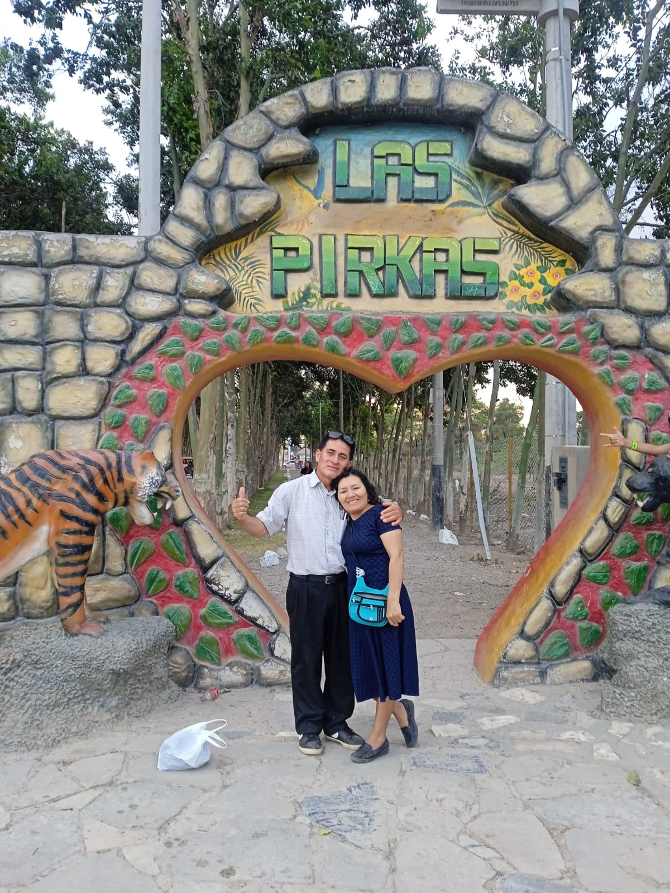
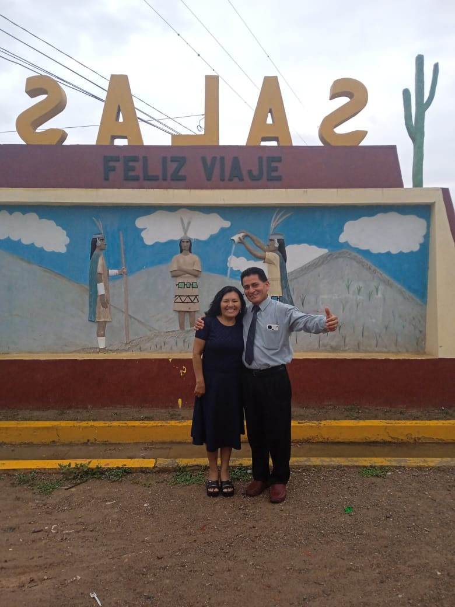

Nuestra Boda

Manuel & Juana
0Días
0Hs
0Min
0Seg

“Mejor son dos que uno… Y la cuerda triple no se rompe fácilmente.”
NOS CASAMOS
02 DE MARZO
Consejo Bíblico
Salón del Reino de Los Testigos de Jehová - SALAS
4:00 PM
VER MAPARecepción
CENTRO CIVICO
6:00 PM
GALERÍA


Código de Vestimenta
Formal Elegante
Recepción de Regalos
El regalo es opcional, la asistencia es obligatoria. Si deseas tener un detalle con nosotros, puedes hacerlo llegar a:
Calle Antenor Orrego 1351 - Chiclayo

¡Acompáñanos!